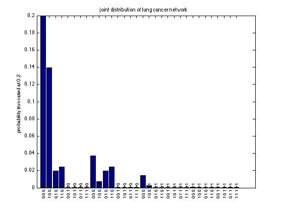

Lung cancer network Example
Make DAG
S
/ \
v v
CB LC
\/ \
v v
SOB X
Contents
nvars = 5;
toporder = false;
[dgm] = mkLungCancerDgm(toporder);
S = dgm.nodeNum.S; CB = dgm.nodeNum.CB; LC = dgm.nodeNum.LC;
SOB = dgm.nodeNum.SOB; X = dgm.nodeNum.X;
names = dgm.nodeNames;
joint = dgmInferQuery(dgm, [S CB LC SOB X]);
Display joint
lab=cellfun(@(x) {sprintf('%d ',x)}, num2cell(ind2subv([2 2 2 2 2],1:32)-1,2));
figure;
bar(joint.T(:))
set(gca,'xtick',1:32);
xticklabelRot(lab, 90, 8, 0.025)
title('joint distribution of lung cancer network')
ylabel('probability truncated at 0.2')
set(gca,'ylim',[0 0.2])
printPmtkFigure('lungcancerJointBar')

Conditional marginals
clamped = sparsevec(SOB, 2, nvars);
pLCgivenSOB = tabularFactorCondition(joint, LC, clamped);
pLCgivenSOBdgm = dgmInferQuery(dgm, LC, 'clamped', clamped);
assert(tfequal(pLCgivenSOB, pLCgivenSOBdgm));
fprintf('p(LC=1|SOB=1)=%5.3f\n', pLCgivenSOB.T(2))
clamped = sparsevec([SOB,X], [2,2], nvars);
pLCgivenSOBandX = tabularFactorCondition(joint, LC, clamped);
pLCgivenSOBandXdgm = dgmInferQuery(dgm, LC, 'clamped', clamped);
assert(tfequal(pLCgivenSOBandX, pLCgivenSOBandXdgm));
fprintf('p(LC=1|SOB=1,XR=1)=%5.3f\n', pLCgivenSOBandX.T(2))
clamped = sparsevec(SOB, 2, nvars);
pCBgivenSOB = tabularFactorCondition(joint, CB, clamped);
pCBgivenSOBdgm = dgmInferQuery(dgm, CB, 'clamped', clamped);
assert(tfequal(pCBgivenSOB, pCBgivenSOBdgm));
fprintf('p(CB=1|SOB=1)=%5.3f\n', pCBgivenSOB.T(2))
assert(approxeq(pCBgivenSOB.T, [0.5038; 0.4962]));
clamped = sparsevec([SOB, X], [2, 2], nvars);
pCBgivenSOBandX = tabularFactorCondition(joint, CB, clamped);
pCBgivenSOBandXdgm = dgmInferQuery(dgm, CB, 'clamped', clamped);
assert(tfequal(pCBgivenSOBandX, pCBgivenSOBandXdgm));
fprintf('p(CB=1|SOB=1,XR=1)=%5.3f\n', pCBgivenSOBandX.T(2))
assert(approxeq(pCBgivenSOBandX.T, [0.5220; 0.4780]));
p(LC=1|SOB=1)=0.004
p(LC=1|SOB=1,XR=1)=0.106
p(CB=1|SOB=1)=0.496
p(CB=1|SOB=1,XR=1)=0.478
Unconditional marginals
mmap = zeros(1,5);
for i=1:5
p = tabularFactorMarginalize(joint, i);
fprintf('p(%s=1)=%5.3f\n', names{i}, p.T(2));
if p.T(2)>0.5, mmap(i) = 1; end
end
p(S=1)=0.091
p(LC=1)=0.001
p(CB=1)=0.020
p(SOB=1)=0.090
p(X=1)=0.200
Joint mode
mode = argmax(joint.T)-1
mode =
0 0 0 0 0